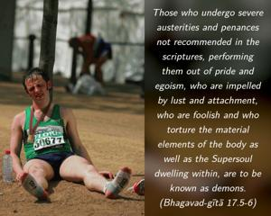
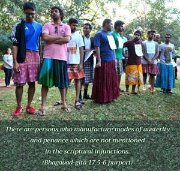

Those who undergo severe austerities and penances not recommended in the scriptures, performing them out of pride and egoism, who are impelled by lust and attachment, who are foolish and who torture the material elements of the body as well as the Supersoul dwelling within, are to be known as demons.


There are persons who manufacture modes of austerity and penance which are not mentioned in the scriptural injunctions. For instance, fasting for some ulterior purpose, such as to promote a purely political end, is not mentioned in the scriptural directions. The scriptures recommend fasting for spiritual advancement, not for some political end or social purpose. Persons who take to such austerities are, according to Bhagavad-gītā, certainly demoniac. Their acts are against the scriptural injunctions and are not beneficial for the people in general. Actually, they act out of pride, false ego, lust and attachment for material enjoyment. By such activities, not only is the combination of material elements of which the body is constructed disturbed, but also the Supreme Personality of Godhead Himself living within the body. Such unauthorized fasting or austerities for some political end are certainly very disturbing to others. They are not mentioned in the Vedic literature. A demoniac person may think that he can force his enemy or other parties to comply with his desire by this method, but sometimes one dies by such fasting. These acts are not approved by the Supreme Personality of Godhead, and He says that those who engage in them are demons. Such demonstrations are insults to the Supreme Personality of Godhead because they are enacted in disobedience to the Vedic scriptural injunctions. The word acetasaḥ is significant in this connection. Persons of normal mental condition must obey the scriptural injunctions. Those who are not in such a position neglect and disobey the scriptures and manufacture their own way of austerities and penances. One should always remember the ultimate end of the demoniac people, as described in the previous chapter. The Lord forces them to take birth in the wombs of demoniac persons. Consequently they will live by demoniac principles life after life without knowing their relationship with the Supreme Personality of Godhead. If, however, such persons are fortunate enough to be guided by a spiritual master who can direct them to the path of Vedic wisdom, they can get out of this entanglement and ultimately achieve the supreme goal.